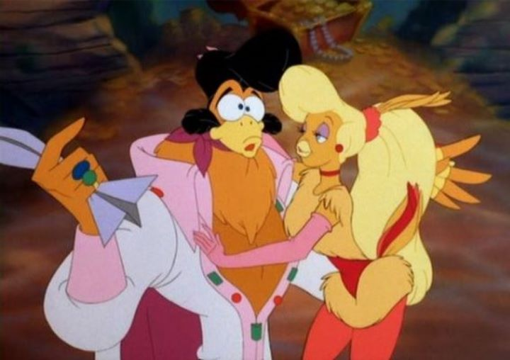

Don Bluth is remembered best for a handful of films and franchises. Saying his name makes "An American Tale," "A Land Before Time" and "All Dogs Go To Heaven" come to my mind before anything else. He made a lot of animated films, some of which are forgotten or ignored more easily than the others. "Rock-a-Doodle" is probably the best example. I had not seen "Rock-a-Doodle" as a child, and based on the title, poster art, or the occasional film clip I've seen, I long had no interest. A country-set story of farm-bumpkin animals searching for their hero, a rooster that looks like Elvis, in the big city? There's a lot of other animated works I need to get to, not everything can be a must-see classic.And yet, many of Don Bluth's films slowly began appearing on Bluray. "Rock-a-Doodle" did in 2017 for its "25th anniversary" curtousey of Olive Films (at the time of this writing, only "A Troll in Central Park" and "Titan A.E." have not seen Bluray from his catelog). And unlike some of his earlier films, perhaps thanks to the time it was released or just careful archiving, it looks GOOD on Bluray. Calling this a classic is a bit of a strentch, in f act if forced to rank them, it is probably the worst film Don Bluth and Gary Goldman released in theaters. But to discover a movie from a cartoon legend decades after its release as an adult is still a treat, and like films from Walt Disney Studios or Studio Ghibli, I can't simply say the film is bad. There's something about it that warms my heart more than anything, a sign that all of these movies are worth watching.One thing I didn't know is that this happens to be the one movie Don Bluth directed that features both live-action and 2D-animated footage, including mixing the two together. It's still novel to see on screen ("Who Framed Roger Rabbit" and "Space Jam" were also released around this era, and the concept was proven in early Disney shorts many decades prior). However, it can be cringe-worthy to watch implemented here, as it only features one child actor interacting with the cartoons on screen, and they clearly used a cheap green-screen effect to paste the boy into the world. Anyway, the story takes place on a live-action farm, where a child (perhaps only five years old) named Edmond is helpless watching his parents and older borthers try to save the farm property during a loud rainstorm. With his unfiltered imagination, he believes the only one who can save the farm is "Chantecler," a rooster from a bedtime story that left his farm, meaning the sun would never wake again and the world would be left in darkness. As Edmond calls out for his hero's name, the window brusts open to reveal a aristocratic but grumpy cartoon owl called "The Grand Duke" who had plotted Chantecler's departure (owls like the dark, ya'know). The owl uses magic to transform Edmond into a small cartoon cat for the purpose of eating him, but is saved at the last moment by the other cartoons from the story still living on the farm. They determine that no matter how small or young they are, they have no choice but to go to the big city in search for Chantecler. And sure enough, they find him, as a rock-and-roll superstar in a Las-Vagas style downtown. The story is pure children's shlock. That tends to be Don Bluth's style, if there are any elements of higher ground that adults can appreciate, it is often by accident. In the case of "Rock-a-Doodle," the story and how it plays out could easily (and perhaps intentionally) be read as a fever-dream by a child. Any enjoyment comes directly from the earnestness of the characters. Edmond is adorable as a cat, there's the fearless old bloodhound Patou who just wants to learn how to tie his shoes, there's the academic mouse Peepers and the ADHD magpie Snipes. Chanticleer himself is a little cocky (get it?) but is still a old-fashioned farm boy at heart, missing the farm and not enjoying his success as a celebrity. The most fun comes from The Duke himself, voiced by none other than the great Christopher Plummer. He had done voice-acting before and after, but none in as important a role as The Duke, and clearly he loved every second of voicing the pompous and cunning creature, stealing every scene much to my delight. I will briefly mentioned that the characters rely on old-fashioned tropes that do not hold up as well today, especially with Snipes, who doesn't appear to have much purpose in the story, and spends most of his time eating food and critizing Peepers for being a woman. Yeah, maybe best to explain to your children why women are just as capable as men shortly after watching this to avoid future confusion. The 2D characters are well-animated, and the film uses a few impressive moving camera shots. Aside from the live-action bits, it is also clear that 3D graphics were being used as reference, but not in a way that is too distracting. The character designs is perhaps a little too busy, especially with Chantecler himself. This is a musical, of which there aren't too many songs, but the few that are there are still good fun. Ultimately, this whole film is good old-fashioned fun for a young audience. There are a good hundred films today that might have higher importance to show your family than "Rock-a-Doodle," but it lies in another era in film from any new animation modern kids are familiar with. They certainly don't make them like this anymore. Perhaps for the better, but a little nostalgia never hurt anyone.
- "Ani" More reviews can be found at : https://2danicritic.github.io/ Previous review: review_Robot_Carnival Next review: review_Rock_and_Rule